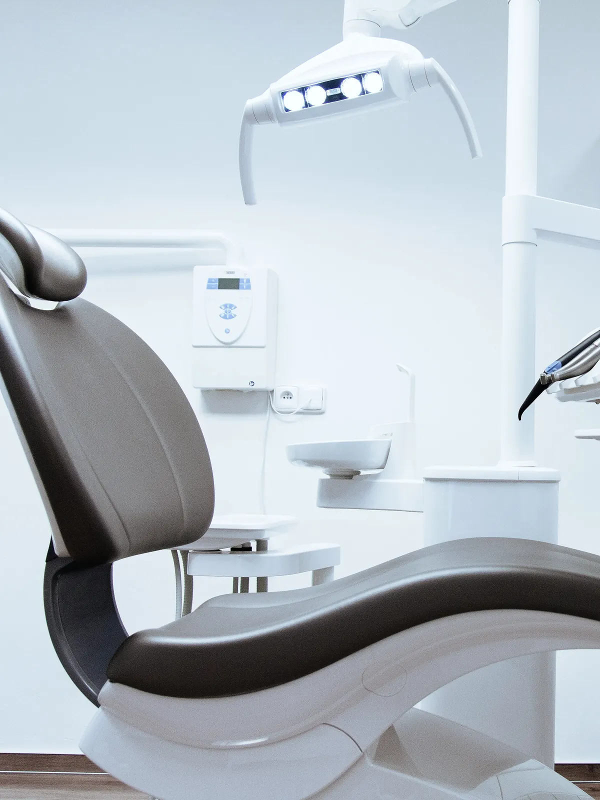
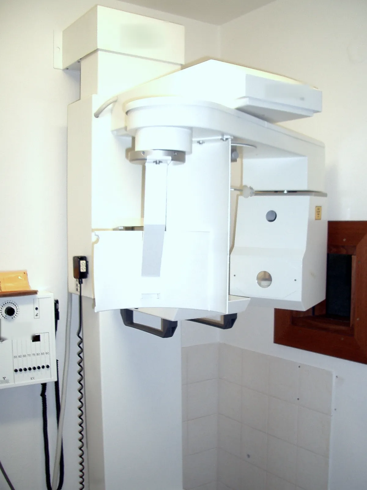
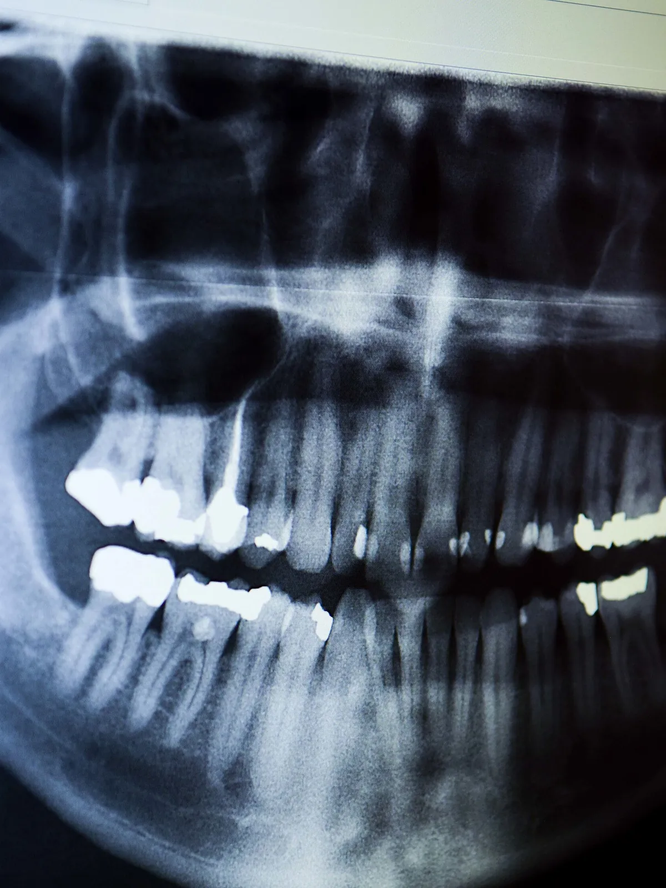
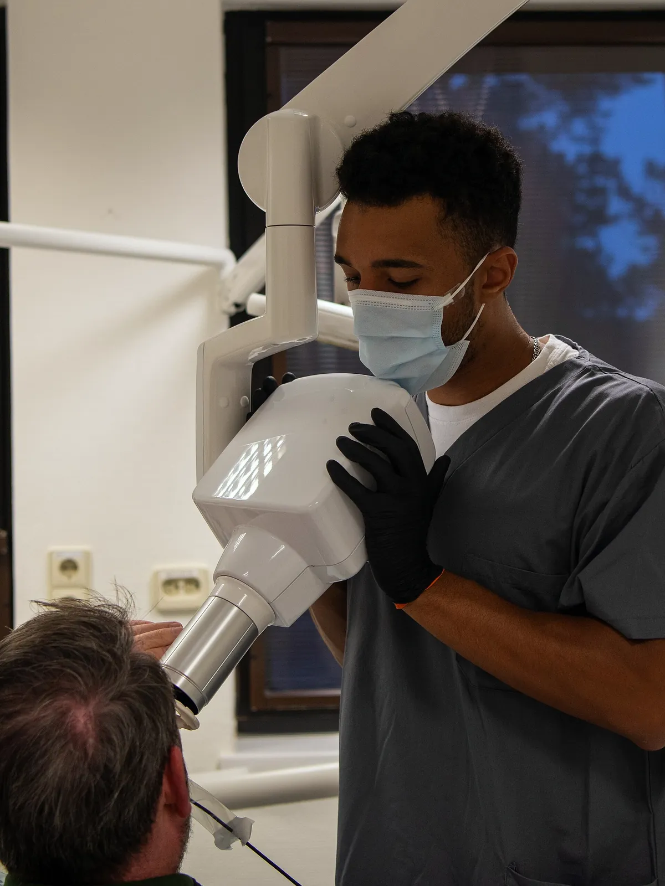
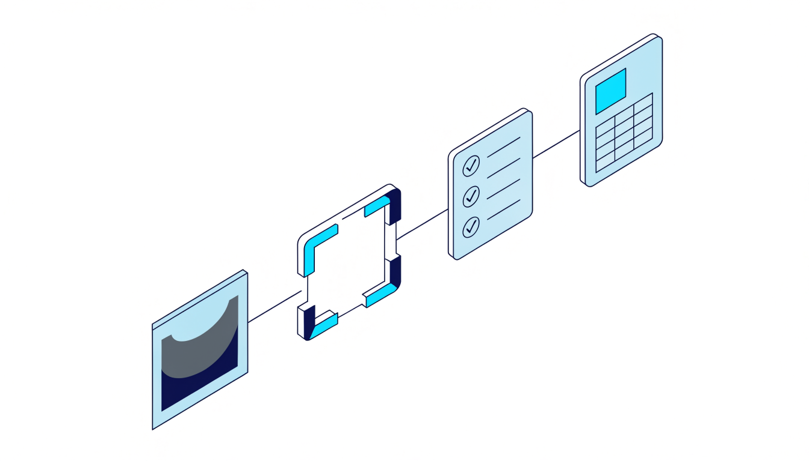
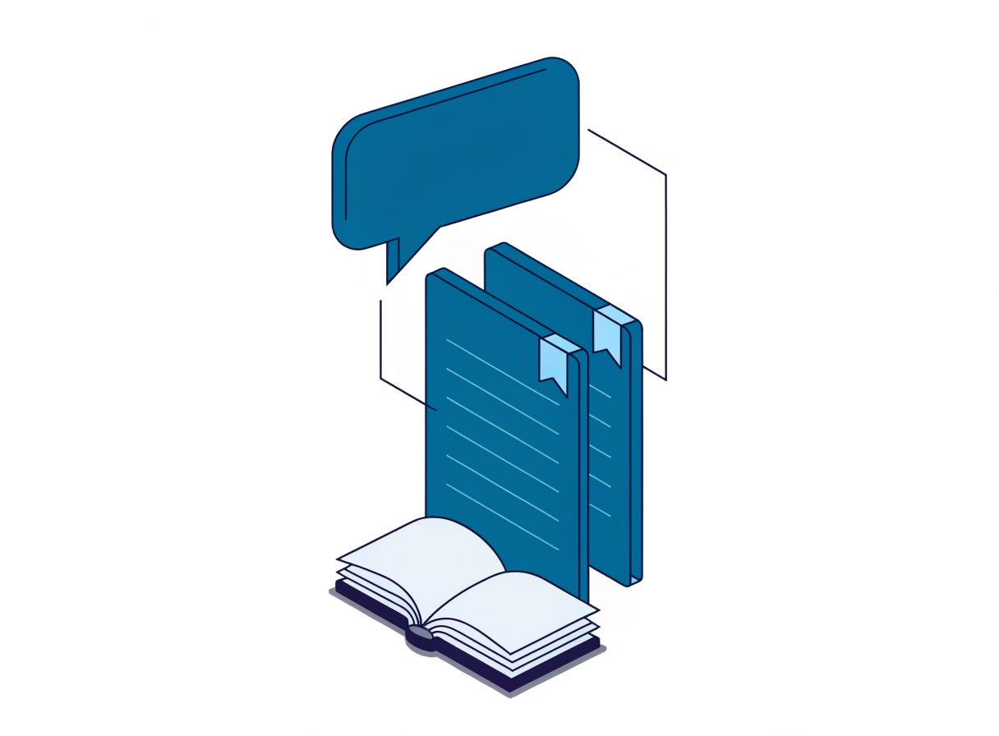

Aide à la lecture des radiographies panoramiques
Une seconde lecture pour vos radiographies panoramiques
Déposez la panoramique : les dents sont numérotées et quatre anomalies vous sont signalées. Vous relisez, vous décidez, puis vous générez le compte rendu.
Détections
Image simulée et données fictives. Faites glisser le seuil : l'affichage suit.
Le parcours, du cabinet au compte rendu
Dans votre navigateur, là où vous lisez déjà
Rien à installer : la relecture s'ouvre sur l'ordinateur du cabinet, à côté de vos examens. Cinq étapes, du fauteuil au compte rendu.




Fonctionnement
De la panoramique au compte rendu en quatre gestes
Nous préparons la lecture ; la décision reste la vôtre.

Importer
Déposez la panoramique en DICOM, JPG ou PNG. Les données identifiantes sont retirées dès l'import.
Analyser
Le modèle numérote les dents selon la norme FDI et propose les anomalies, chacune avec un indice de confiance.
Relire et corriger
Validez, corrigez, ajoutez ou supprimez chaque détection. Rien n'est retenu sans votre relecture.
Générer le compte rendu
Un PDF anonymisé : image annotée, tableau des détections retenues, version du modèle.
Ce que détecte la plateforme
La numérotation des dents et quatre anomalies, rien de plus
Chaque type a sa couleur, toujours accompagnée de son nom : la couleur seule ne suffit jamais.
Vous gardez la main
Rien n'est retenu sans votre relecture
Chaque détection reste « non revue » jusqu'à votre décision. Trait plein : proposition du modèle ; pointillé : votre ajout ou votre correction.
Le modèle a proposé une carie profonde (91 %) : une zone radio-claire étendue de la couronne, proche de la chambre pulpaire[1]. L'indice de confiance mesure la certitude du modèle, pas une probabilité clinique[2].
Dent 36 : carie profonde, 91 %, validée.
…le score exprime la certitude du modèle sur sa propre proposition.
Je ne peux pas poser de diagnostic ni recommander un traitement : la décision clinique vous revient. Je peux vous expliquer ce que le modèle a détecté sur la 46.
Aide à la décision : jamais un diagnostic. Sources de démonstration.

Un assistant qui explique
Chaque réponse cite ses sources
Interrogez l'assistant sur l'analyse en cours : il répond à partir de la base documentaire et montre le passage utilisé.
Vos données protégées
L'image ne quitte pas le serveur
Nous analysons la radiographie sur le serveur de la plateforme : aucune image n'est confiée à un service extérieur.
Anonymisation à l'import
Balises DICOM, métadonnées et texte incrusté retirés avant l'analyse.
Aucun envoi extérieur
Le modèle et l'assistant tournent sur notre serveur.
Droits par rôle
Administrateur, praticien, lecteur. Pas d'inscription libre.
Journal d'audit
Connexions et actions sensibles, en ajout seul.
Fiabilité et limites
Pas encore de chiffres : voici ce qui sera mesuré
Le modèle est entraîné sur DENTEX, un jeu public de panoramiques. Nous publierons ses mesures classe par classe, sur des images jamais vues à l'entraînement.
- Pas encore évalué sur des images de cabinets de Toliara.
- Quatre anomalies seulement : ni parodonte, ni fractures, ni kystes.
- Sensible à la qualité de l'image : flou, positionnement, artefacts métalliques.
Pour chacune des cinq classes
- Précision moyenne (mAP@50)
- À quel point les cadres proposés tombent juste.
- Rappel
- La part des anomalies réelles que le modèle retrouve.
- Précision
- La part des propositions justes : l'inverse des fausses alertes.
Demandez un accès pour votre cabinet
Nous transmettons votre demande à l'administrateur, qui crée le compte.